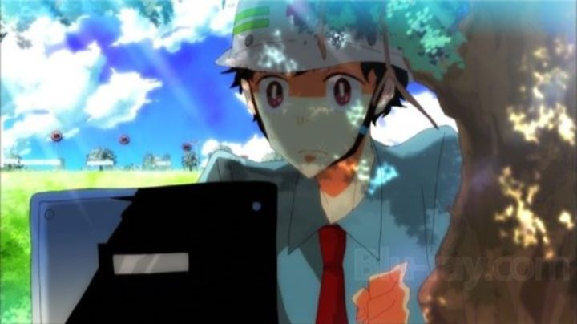

Every now and then, indie artists pop up and amaze people. This is true in music, film, gaming, and animation. Makoto Shinkai is one such person, and his very personal stories and sense for beautiful imagery has allowed him to gain fans across the world, as well as getting distribution of his anime outside of Japan. That's rare to happen, so when it happens again with Soubi Yamamoto, it's something I feel inclined to support, even though the trailers and promotional artwork don't do the work any favors. But I can say his first major work, "This Boy Can Fight Aliens," is actually not horrible, at least for an artist's first try.The earth is attack from aliens, who send down one alien each day to fight. They fight Kakashi, a teenage boy with acrobatic skills that make him the only one on Earth capable to fight back. But he also has no memories of his past or who he is, so he lives with a teenager government agent and his cynical friend, as Kakashi continues to fight every day. But why are the aliens attacking? Why does Kakashi have these powers? Why can't Kakashi remember anything?None of these questions are ever answered, sadly. The 30 minute short focuses on the loneliness and sadness of not knowing if you have any friends or family waiting for you out there, and being given the incredible responsibility to save the world every day. Kakashi questions and doubts himself constantly, even hinting at considering suicide. Surprisingly, the emotional themes here are executed quite well. Sure, it feels heavy and artificial in the way that anime does sometimes feel, but it's almost as effective as Makoto Shinkai's romantic works, which is no easy feat. If you over analyze the film, you might say that the aliens are just a manifestation of Kakashi's inner self, but Yamamoto probably just left the true answers out of purpose, possibly to allow for a full-length film or series one day.The art style is the real draw for this film, but also the most alienating property. The animation itself is really crude and limited, but the character designs are unique, both beautiful and ugly in their uniqueness. The character designs and poses hint at an edge of homosexuality in the men, but that is not really a factor in this story (although his existing future work suggests this style could still alienate some people). The environments have detail and pop in them, but most of it clearly done in Adobe Flash or a similar software suite to allow such effects to be made easily. The editing is interesting, though: it cuts often to stills and text during conversations, similar to Bakemonogatari, which was praised for such editing (although it also allows for a lack of animation to reduce production time and costs). The music is ok, but generic and clearly taken from online sources, and the English dub is decent, but limited.  It's hard to judge an artist's work when made from an artist's perspective instead of a form of entertainment to make money. I can say it is better than I thought, but still disappointingly similar to a college-student's project. Since the American release by Sentai Filmworks contains both the feature and three other shorts in the bonus features (each short clearly leading up to the main feature), I'd recommend buying it to support an indie artist and for the potential that may come from his future work. But that's it, no other reason. At all.(While I saw this shortly after its American home-video release, as of 2017, the director has gone on to make several other anime properties that clearly make use of the unique visual style, for better or for worse. If you are one of his fanbase and haven't yet seen this short film, by all means do, its worth it from a artist's historical perspective despite any flaws in the story.)
- "Ani" More reviews can be found at : https://2danicritic.github.io/ Previous review: review_They_Shot_The_Piano_Player Next review: review_Thumbelina